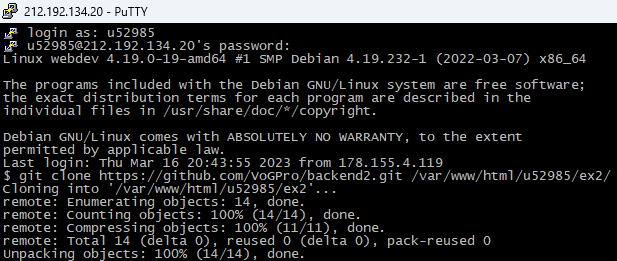
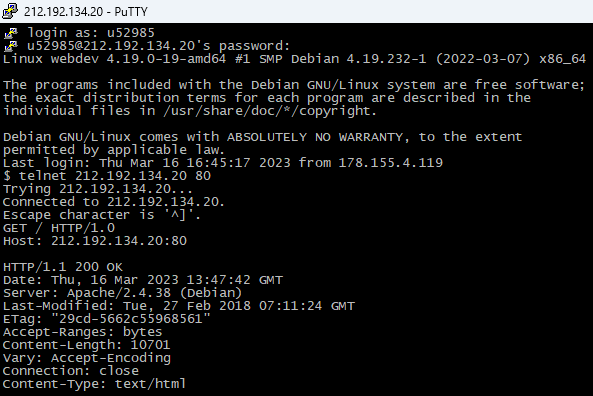
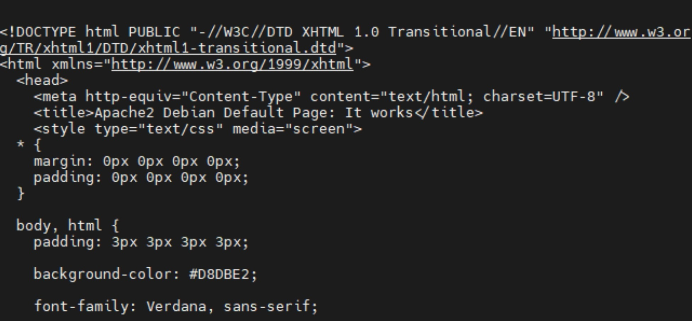
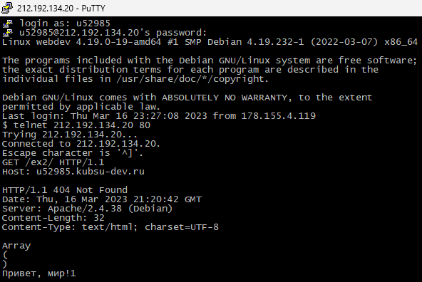
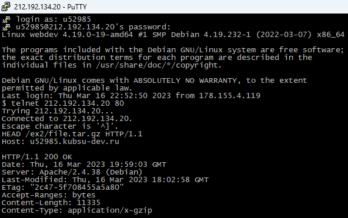
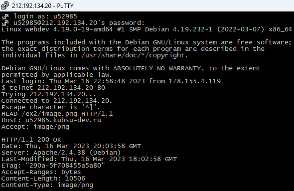
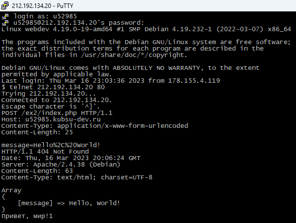
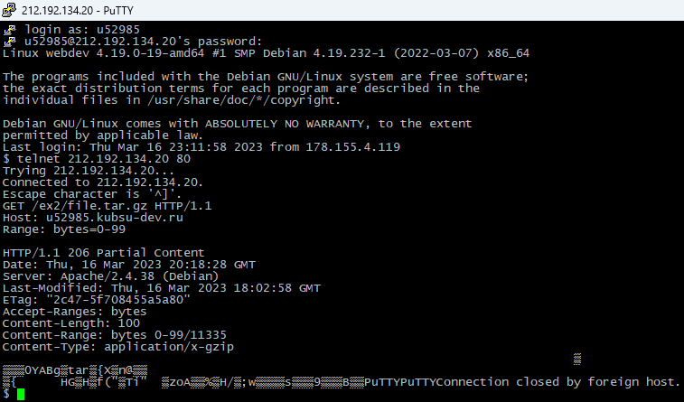
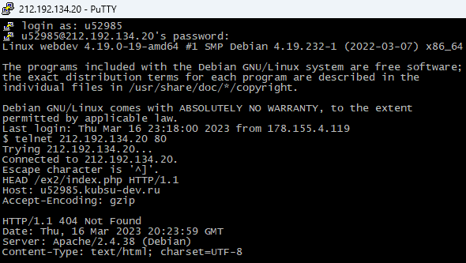

Подготовка
1. Получаем главную страницу методом GET в протоколе HTTP 1.0
 2. Получаем внутреннюю страницу методом GET в протоколе HTTP 1.1
3. Определяем размер файла file.tar.gz, не скачивая его.
4. Определяем медиатип ресурса /image.png
5. Отправляем комментарий на сервер по адресу /index.php
6. Получаем первые 100 байт файла /file.tar.gz
7. Определяем кодировку ресурса /index.php
